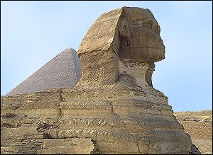
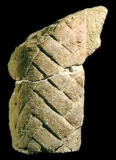
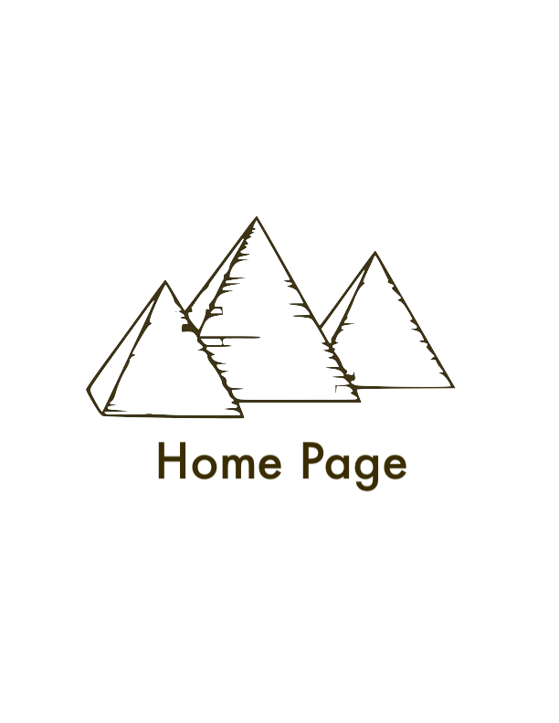

The Sphinx
What is the Great Sphinx?
The Great Sphinx is a large human-headed lion that was carved from a mound of natural rock. It is located in Giza where it guards the front of Khafra's pyramid.

The Great Sphinx at Giza, Egypt
Legends have been told for many years about the Great Sphinx. These stories tell about the powers and mysteries of this sphinx. Some people even believe that there are hidden passageways or rooms underneath the Great Sphinx, but nothing has been found yet.
The beginning of one story about the Great Sphinx is written on a stele between the sphinx's paws.
Image: The Sphinx (foreground), gaurding the entrance to the The Great Pyramids of Giza .

The story reads that one day, a young prince fell asleep next to the Great Sphinx. He had been hunting all day, and was very tired. He dreamt that the Great Sphinx promised that he would become the ruler of Upper and Lower Egypt if he cleared away the sand covering its body (the Great Sphinx was covered up to its neck).
The rest of the story is gone, so you will have to use your imagination to work out the ending. This stele was put up by the pharaoh Thutmosis IV who lived around 1400 B.C.
Image: This is part of the beard of the Great Sphinx. The beard was added during the New Kingdom- hundreds of years after the Great Sphinx was first carved.
